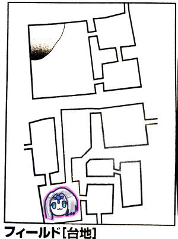
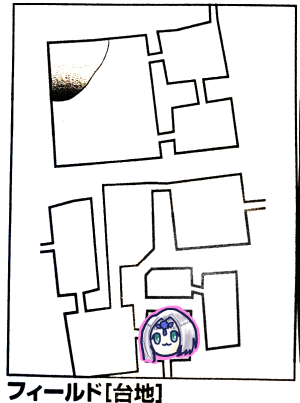

またしても9ヶ月以上もの時間が空いてしまったTRPGキャンペーンリプレイはーじまーるよー！
日付を見ての通り、コロナ禍真っただ中です！
最早誰もカラオケに集まってやろうということは考えない！
そして軽率に出かけられないこともあり、この後セッションはこれまでに比べて加速していく…
というわけで思い出すところからです！リプレイ書けてなくてごめんね！
新米騎士の3回目の行先が決まったところからですね！
みぞれ「回復ってしていいんですよね」
GM「いいよーｌ宿代は払ってくださいね」
みぞれ「えっ、村で宿にお金払った記憶がない」
GM「ずっとローレンスさんのところに泊ってますね」
「やさしい」
ナナシ「自宅欲しいよな自宅」
GM「エターナルは自宅が持てる数少ない機会の1つだからね」
協議の結果、今回の新米騎士は次のようになりました。
ブラック「うっす！よろしくっす！」
ホワイト「ちょっと口にきき方に気を付けて！？」
グレー「きさまらが教官か」
タッシュ「ぶっていい？」
GM「というわけでどどんとふにアイコン追加してもらえると助かります」
「グレーいらすとやじゃん」
「イキってませんか」
「ブラック世紀末なんだけど」
この騎士団大丈夫か？
さて出発です。行先は台地です。
GM「台地はですね、北側が高くなってる崖になります。まず上ることはできないと思われます」
みぞれ「南北が行き来できなさそうなのそれか」

最初のエリアは丘陵地帯です。西から入ったので南側のエリアになります。低い側ですね。
GM「ではイベントを振ってください」
ピーター「6でーす」
ブラック「おだやかなとこっすねー」
ブルーローズ「そういうのをフラグっていうのよ、覚えておきなさい」
ピーター「モンスターは2でーす」
GM「巨大3mの大きな牙と耳と鼻を持った動物が1体、全長5ｍほどの鮮やかな縞の蛇が2体です」
ピーター「魔物知識判定しまーす」
GM「片方はエレファント、頭と胴体の2部位です。もう片方はジャイアントヴァイパーです。両方弱点抜きました。なおジャイアントヴァイパーはバルバロステイルズ持ってない人はミストキャッスルに載ってます」
「なんでミストキャッスル」
ナナシ「先制判定しまーす。ほい成功」
みぞれ「じゃグレネード撃ちます、19」
GM「全員抵抗失敗しました」
みぞれ「回った、21点ダメージです」
ピーター「エレファント弱点魔法ダメージ+2ですよ」
GM「これはひどい」
ナナシ「エターナルはじまったな」
ナナシ「じゃグレーイキるよ」
みぞれ「イキるんだ」
グレー(ナナシ)「わが剣のサビとしてやろう。全力攻撃、目標エレファント頭、命中15」
GM「エレファント回避16」
グレー(ナナシ)「しょっく！」
ホワイト(ブルーローズ)「全力攻撃をエレファント頭に、13」
GM「同値回避！」
ブラック(タッシュ)「エレファントの頭を全力攻撃」
GM「回避」
ナナシ「先生エレファントやっちゃえませんか」
タッシュ「魔法誘導持ってないから無理」
ナナシ「ヴァイパー俺が引き留めるからブルーローズエレファント仕留めちゃって」
ブルーローズ「じゃトンファー魔力撃でエレファント殴ります、18」
GM「15、回避できない」
ブルーローズ「ダメージ21」
GM「エレファント倒れました」
ブルーローズ「いいですかみなさん象というのはこうやって殴るのです(ｷﾘｯ」
ナナシ「先生、判定成功でファストアクションで目標変えられる？」
タッシュ「できるねー」
ナナシ「じゃまずは蛇1にサーベルで挑発攻撃、21」
GM「11、回避失敗」
ナナシ「ダメージ14」
GM「あれ、そういや挑発攻撃って2だっけ？」
ナナシ「2ですね」
みぞれ「2だとどうなるの？」
ナナシ「追加ペナ-2がなくなる。じゃウィップで蛇2を攻撃します」
GM「武器持ち替えるの？」
ナナシ「右手にサーベル、左手にウィップ持って」
タッシュ「ナナシ両手利きだっけ？」
ナナシ「両手利きじゃないとダメなのか、じゃウィップと交換して攻撃することにする、21」
GM「11、失敗」
ナナシ「絡み部位は2、てことは武器や盾…ヴァイパーそんなものなさそう。わんもあ？5、胴体」
GM「胴体はあるねー、絡まったよー」
ナナシ「ダメージ12」
ピーター「チアで」
タッシュ「ヴァイパー両方ナナシと接敵してるんだよね？」
ナナシ「タッシュ先生殴ってもいいよ」
GM「蛇1は挑発受けてて、2は乱戦範囲ならだれでも狙える状態だね」
ナナシ「えっおれ両方挑発攻撃って言いましたよ」
GM「挑発攻撃は1手番1回しか宣言できないよ、だから蛇1しか挑発かかってない」
タッシュ「制限移動で接敵してブラスト、目標バイパー2」
GM「バイパー2って言われると戦闘機みたい」
タッシュ「12…しょぼ」
GM「14、抵抗」
タッシュ「ダメージ18半減で9点」
ピーター「あー、チアって言わなければよかった」
GM「チアってルールはないから別にいいよ」
ピーター「えーっとぉーそれじゃウィザーズストーム」
GM「そんな魔法あったっけ…ウィザーズトゥームか」
ピーター「ウィザーズストームって言いました…えっとシュートアロー撃ちまーす、必中なので行使判定だけします、成功」
GM「これ抵抗もできねーから普通にダメージくらうのか」
ピーター「ダメージ14…あっこれいちたりない？」
みぞれ「いちたりないね…」
GM「じゃこっちのターンね。バイパーワンから。挑発攻撃受けてるからナナシに攻撃。15」
ナナシ「22で回避！ブレードスカートいくよー11点」
GM「蛇2いきます、ホワイトにかみつきます、13」
ナナシ「これって絡み引いてます？」
GM「あっそうか、じゃ12だ」
ホワイト「5、失敗」
GM「13ダメージです」
みぞれ「生きてる？」
ナナシ「余裕余裕」
GM「追加攻撃で毒10、生命抵抗お願いします」
ホワイト「12、成功」
GM「抵抗できなかったら消滅です」
「ひええ」
ナナシ「こっちのターン、蛇1に挑発攻撃、20」
GM[16、命中でーす」
ナナシ「ダメージ12」
タッシュ「2を殴っちゃうかー、命中はできると思うんだ」
ナナシ「乱戦ですよね。ソーサラーのしょっぼーい魔法とかないですか」
タッシュ「MPくうからねぇ」
ナナシ「先生MP無尽蔵でしょ」
タッシュ「蛇2を殴ります、13」
GM「14、回避」
タッシュ「あれー？」
GM「今日ナナシ先生が絶好調だからね、バランス取れてる」
ナナシ「これ最終戦闘で先制失敗する未来がみえる」
みぞれ「過ちを繰り返すのはやめよう」
ブルーローズ「魔力撃撃ちたいなー。ころころ」
GM「目標は？」
ブルーローズ「あっ蛇1です、やりなおしたほうがいいですか？」
GM「まあいいよ、14、命中しました」
ブルーローズ「ダメージ22、撃破！」
グレー「全力攻撃ツーハンドで、12」
GM「15、回避」
ブラック「殴るよー、全力攻撃、10」
GM「16、回避」
ホワイト「蛇2を攻撃！9」
GM「13、回避」
ピーター「今度こそチアで」
みぞれ「おまかせしまーす」
GM「残った蛇がナナシを攻撃、14」
ナナシ「おお、クリティカル回避」
タッシュ「これあとが怖いな」
ナナシ「ブレスカいきます、うわあ、回った、うわあ、19」
「オーバーキル」
ピーター「うさちゃん目が鋭くなってるのではぎとります、でもななっしーの方が出目いいのでエレファントお願いします」
ナナシ「それフラグー！ころころ…8。+1で9、まあまあ」
ピーター「蛇はぎまーす、9」
タッシュ「残りはぎます、7」
GM「極上の蛇の皮をピーターがはいでる」
ナナシ「さすが目つきの悪いピーター」
ブルーローズ「騎士たちって自由行動できるんでしたっけ？こいつらレンジャー持ちだから自分で救命草使わせればいいと思うんですけど」
ピーター「袋から救命草を取り出しました」
ホワイト「5点回復」
ブルーローズ「ビビッド歌いまーす」
GM「ここは北壁の探索と普通の探索ができます」
みぞれ「せっかくなので北壁を…10、しょぼ」
GM「特に何もわからなかった」
みぞれ「せやな」
南へ移動しました。

GM「ここは草の生い茂る丘陵地帯です。ところどころ地面が陥没したらしい穴が開いています」
ナナシ「お、きた、5、戦闘だ！種類は1」
GM「槍を持った下半身馬、上半身人間のたくましい戦士が2体」
ナナシ「ケンタウロスだと遭遇済みですけど違います？」
GM「ケンタウロスではありません」
ナナシ「ケンタウロスなんちゃら」
みぞれ「インペイラー？」
GM「それ。あと暴走馬車の強盗」
ブルーローズ「インペイラーに馬車引かせてる！？」
ピーター「弱点抜くためにセージ判定しまーす、馬車から」
ナナシ「馬車弱点ないけどな」
ピーター「まじか、人間だからか」
GM「インペイラーにはあるよ。残念ながら弱点抜けませんでした」
馬車は本体と馬と荷車の3部位です。そうか本体が人間かこれ。
ピーター「イニシアチブブーストします」
ナナシ「19、先制成功」
みぞれ「グレネード投げまーす、20」
ナナシ「なんか+1されてるけどそれはなに？」
みぞれ「オプションで上げてる」
ナナシ「さすがハッピートリガー」
GM「全員失敗」
みぞれ「18ダメージでーす」
タッシュ「ファイアーボール入れとくか。お、クリティカルだ」
GM「だめです、全員くらいました」
タッシュ「ダメージ出た、13」
GM「馬が倒れました」
みぞれ「こいつコア部位どこだっけ」
GM「本体」
ピーター「新米騎士殴らせたほうがいい？ならチアで」
グレー「全力攻撃ツーハンド、13、これ当たるっしょ」
GM「15、避けた」
グレー「なんだと」
ホワイト「暴走馬車本体、通常攻撃で、11」
GM「13回避」
ブラック「馬車本体、ツーハンドで、9」
GM「15回避」
「騎士全滅やん」
ブルーローズ「馬車沈めます。本体にトンファー魔力撃。21」
GM「ファンブル」
ブルーローズ「よーし馬車ひっくり返すぞー」
ナナシ「これ運命変転したらいいんじゃない？」
GM「ナナシありがとう、反転してクリティカル回避」
ブルーローズ「えー、そしたら追加攻撃します。今のはエキシビジョンよ！」
みぞれ「フェイントじゃないんだ」
ブルーローズ「命中15」
GM「12、失敗」
ブルーローズ「ここからはブルーローズの馬車解体ショーよ！23ダメージ！」
GM「消し飛んだ」
ナナシ「挑発攻撃14」
GM「11失敗」
ナナシ「やったGMがつきあってくれた！ダメージは1ゾロ、でも挑発は入った！ファストアクションでウィップで攻撃、16」
GM「16、同値回避」
GM「じゃモンスターターン、ケンタウロス1、カオスショットをナナシにかけます」
ナナシ「聞いてないよー」
GM「なんでブルーローズインペイラー狙わないのかなと思ってた」
ブルーローズ「馬車の方が解体のしがいがあったのよ」
GM「15で精神抵抗お願いします」
ナナシ「19。首しめればよかったな」
GM「11点。半減で6点か」
GM「ケンタウロス2は1d6で対象決めるか。ころころ、えーとホワイト」
ナナシ「またホワイト」
GM「18で攻撃」
ホワイト「10、だめでーす」
GM「17点ダメージ」
ブルーローズ「防護引いて13ダメージ、生きてる生きてる」
ホワイト「なんで僕だけ！？」
ブルーローズ「ついてないキャラなんだ」
みぞれ「とりあえず見てる」
GM「え、グレネード撃つって？」
みぞれ「誰もそんなこと言ってないですぅ」
「ホワイトが泣いちゃう」
ホワイト「インペイラーを攻撃、9」
GM「9だけどファンブル、ダメージ2倍」
ホワイト「ダメージ12点」
GM「24点、あ死んだ」
ブラック「残ったインペイラーを攻撃、15」
GM「13」
ブラック「よっしゃ！8点ダメージ」
なおグレーは失敗しました。
「成長した2人の騎士がそこにいたのだった」
「グレーぐぬぬぬってしてるよ」
ブルーローズ「トンファー魔力撃でインペイラー攻撃」
GM「避けた」
ブルーローズ「今のはねーフェイントなんですねー」
みぞれ「それ何キャラ？」
GM「同値回避」
ブルーローズ「あらっ！？」
ナナシ「デーモンフィンガー使います、ケンタウロス首を狙ってウィップで挑発攻撃。15」
GM「17回避」
みぞれ「ソリバレのみでインペイラー攻撃、13、ひくっ」
GM「15、回避」
タッシュ「エネボうちます。16」
GM「14、抵抗失敗」
タッシュ「13点」
GM「はい撃破」
ブルーローズ「これ馬車の馬連れて帰ってライダーズギルドに売れませんか」
GM「最初に倒しとるやん」
みぞれ「ここ崖に接してないから崖は調べられないのか。穴調べたら何か出てきそう」
GM「普通の探索と穴の探索は同じだよ」
グレー「探索します。7」
GM「穴からガスが噴き出してグレーの顔を覆う。生命抵抗判定お願いします」
グレー「11」
GM「抵抗は失敗です」
ブルーローズ「これもいい経験よ」
GM「毒のダメージ出します。19点」
みぞれ「探索します。15」
GM「踏み抜きませんでした。普通に探索成功です」
みぞれ「あっ普通なんだ。探索結果は3…低い」
GM「つばめむぎ入手です」
みぞれ「つばめ…？」
GM「つばめが食べる麦みたいな植物」
ブルーローズ「グレーにキュアウーンズします」
GM「一番イキってるのに一番成果を出せていなくてボロボロになっていくグレー」
ピーター「ウィスパーヒールで範囲回復の方がいいかな。11点回復ね。5人までだから、グレー、ホワイト、ナナシかな、はい成功」
北東へ移動。

みぞれ「これ一度戻ればよかったんじゃないの？」
GM「同じ場所での戦闘は無効ですので」
GM「丘の上に石碑がいくつも立っています。イベント振ってください」
みぞれ「3です」
GM「ここ風がよく吹いてるんですよ。風のいたずらイベントになります」
みぞれ「こっちも3」
GM「風が悲鳴を運んできます。悲鳴が聞こえてきます。どうします？」
ブルーローズ「行ってみましょう」
GM「旅人がいて、モンスターに襲われています」
みぞれ「商人かな？商人かな？」
GM「襲ってきてるのは1体です。地表につるをのばしたトゲだらけの植物です。人間3人が襲われています。」
ピーター「魔物知識判定します。20」
GM「それは完璧ですね。ビッグアーチャーです」
ナナシ「エメラルドスプラッシュですか」
タッシュ「あー…これエメラルドスプラッシュだ」
ツタだからですかね？
GM「危険感知判定してください」
ナナシとピーターが成功しました。
GM「3人の旅人のうちの2人がゼリー状の不定形生物に変身しました」
みぞれ「今の危険感知判定それ見破れるかどうかか」
ピーター「じゃスライムに対して魔物知識判定します、22」
ナナシ「ものしりうさちゃん」
GM「シングです」
タッシュ「これ人間巻き込んじゃうのか」
「これビッグアーチャーつぶせば人間連れ出せる？」
GM「乱戦マシマシにしたら離脱できるよ」
「じゃビッグアーチャー先につぶそう、ブルーローズ頼む」
タッシュ「ファイアウェポンをブルーローズとナナシにかけます」
ブルーローズ「スフィンクスノレッジとマッスルベア使います、トンファー魔力撃でビッグアーチャーを殴ります。あっ異貌化します」
みぞれ「騎士も一般人もいますよ」
ブルーローズ「一般人を救う方が大切よ！20」
GM「14、回避失敗」
ブルーローズ「えいっ、回った、37点ダメージ！追加攻撃しまーす、18」
GM「クリティカル、回避」
ブルーローズ「避けられた！？」
タッシュ「騎士たちにビッグアーチャー殴らせたほうがいいかもね、ブラックツーハンドで、当たりそうだから全力しちゃうか。12」
GM「9、当たった」
タッシュ(ブラック)「10！あ、全力入ってないから+4です」
ホワイト「ビッグアーチャー攻撃します。クリティカル」
GM「11、むり」
ホワイト「12点ダメージ」
GM「しにました」
グレーは戸惑っている！
ナナシ「グレーいくよ。しね！シング！」
みぞれ「いくんだ」
ナナシ「振らなきゃいかんし。14、当たりそう！」
GM「12、当たった」
グレー「俺だってやるんだ！14点ダメージ」
ピーター「ピーター殴ってみる」
みぞれ「なぐるの？」
ピーター「魔法で殴る。フレイムアロー数拡大でシング2匹に撃ちます。19」
GM「両方同値抵抗」
みぞれ「まじかーみんななかよし。弱点て後から乗るんだっけ」
GM「そう、半減後」
ピーター「18、半減で9点ダメージ」
みぞれ「シング炎弱点？じゃエフェクトバレット炎＋キャッツアイ入れて15」
GM「14、失敗」
みぞれ「あっぶねーキャッツアイ様々！12点でーす」
ナナシ「同じシングに攻撃、21」
GM「16、だめでーす」
ナナシ「2回転、26点ダメージ」
GM「しんだ」
ナナシ「ファストアクションでもう一体、こいつ(絡み場所)胴体しかないよね？14」
GM「同値回避」
GM「シング攻撃します。ランダムで攻撃します」
「待って村人下げてない」
「人数足りてるよね？下がれ下がれ」
みぞれ「あっわたし下がってない」
GM「じゃシングの攻撃、ランダムで決めるよー、1d8で6、みぞれ」
みぞれ「あーーー」
GM「11」
みぞれ「12回避！このためのフェンサーLV1！」
ブルーローズ「ファイアウェポンいつ切れるんでしたっけ」
「永遠」
「永遠はない18ターン」
「ほぼ永遠」
ブルーローズ「じゃ気にしなくていいってことですね。スフィンクスノレッジ、トンファー魔力撃でシングを攻撃！13、おや？フェイントかな？」
GM「16回避」
ブルーローズ「フェイントだった！追撃します、17」
GM「はいだめー」
ブルーローズ「えいっ！30点ダメージ！」
ナナシ「ぱねえっす姉貴」
ナナシ「シングに絡み挑発しますね。対象は胴体、20、いぇーい相手は死ぬ」
GM「10、だめでーす」
ナナシ「わっしょい、28点ダメージ」
みぞれ「また2回転してる」
タッシュ「え、大丈夫ナナシ？」
GM「ナナシダメージベース11もあるんだ…しんだ」
GM「旅人が君たちに感謝するよ」
みぞれ「ご職業は」
旅人「僕は諸国を漫遊する旅人さ」
全員「………………」
全員「ざんねーーーん！」
旅人「えっ？？？」
旅人は一番南中央のエリアに行きたいらしい。
ナナシ「いいでしょう、あなたは商人ではないですがいいでしょう」
タッシュ「漏れてる漏れてる、本音が漏れてる」
ブルーローズ「困ってる人がいるなら助けるのが冒険者です」
みぞれ「武器を洗うのは自由行動使いますか」
GM「使いません、コスト払うので」
ピーター「シング剥ぎます、11、ミニブロブ出た」
ブルーローズ「え、かわいい、名前つけて飼おうよ」
ピーター「いざという時には容赦なくパラライズとかの糧にされるよ。赤Sはねーいい効果になるよー」
ナナシ「ぞれみ探索して」
ブルーローズ「つららちゃん探索して」
みぞれ「好き勝手呼びやがってー」
GM「石碑がいっぱいありますが、文字が掠れて読めません」
グレー「探索します。5、あ、きた、運命変転します！13」
GM「結論はみぞれと一緒です」
ブラックとホワイトも探索失敗。
ブルーローズ「もう一度ここ調べたい」
みぞれ「今イベント5と6で戦闘になるんですけどね」
タッシュ「今商人、いや旅人いるしね」
GM「意見が割れたらリーダーが決めるってことで」
ブルーローズ「じゃとどまります」
ブルーローズ「イベント3です」
GM「風のいたずらイベントです」
ブルーローズ「えっまた？6」
GM「風に乗って何かが飛んできました」
ブルーローズ「ギャルのパンティが？」
みぞれ「ギャルのパンティ！？」
GM「何が飛んできたか判定してください」
ブルーローズ「2です」
GM「風切り羽が飛んできました」
ナナシ「ほら！何も起きなかった！」
みぞれ「このパーティーの今までの所業を考えると奇跡」
全部で4つの武器を酒の種で洗浄。
ピーター「こんなこともあろうかと用意しておいたのですよ」
みぞれ「探索します、10」
ナナシ「探索します、17。探索ってのはこうやるんだよ」
みぞれ「くっそむかつくわｗ」
GM「石碑のひとつが倒れていてその下に地下への通路があります」
「なんだろ？南東の2エリアが分断されてるけど、そこに行く通路かな？」
グレー「探索します。クリティカル」
GM「魔法文明語が石碑に書かれていることに気づきます」
「タッシュ先生ー」
GM「『願わくばこの地を慈愛によりて統治せし都の人々の魂に安らぎを』と書かれています」
みぞれ「慈愛…てことはウルトゥケ？」
GM「あと小さな遺跡を発見しました、これは追加ボーナスで、エターナルとは関係ないです。あとこの遺跡は見つけやすいので売れません。ゲームとしての扱いは一緒です」
みぞれ「今まで見つけてきた遺跡って売れるんでしたっけ」
GM「売れる」
ブルーローズ「じゃここは我々専用ってことか」
GM「あ、めんどくさいからもう今までと一緒でいいです」
とりあえず時間ないから地下は今度にしよう、ということで、旅人の依頼の場所へ行くことになりました。
旅人「目的のエリアに近づいてきた、ありがとう」
ブルーローズ「そこに何があるの？」
旅人「景色のいい場所があるんだよ」
みぞれ「ほーん」
ブルーローズ「とりあえず行ってみましょう」
タッシュ「イベント6です」
みぞれ「はい知ってた」
タッシュ「種別は4」
GM「インペイラーと馬車ですね」
ピーター「セージ判定しまーす」
GM「インペイラーのみになります。弱点抜きました」
ナナシ「先制判定します。ピーターイニブくれた？」
ピーター「あげてなーい、あげるー」
ナナシ「15、セーフ、イニブなかったらやばかった」
みぞれ「グレネード前衛全員に投げます、15」
GM「馬車同値成功」
みぞれ「あ、オプション足してなかった、16です」
GM「なんだと…全員失敗」
みぞれ「13点ダメージでーす」
タッシュ「ファイアーボール撃ちます。15」
GM「馬だけ抵抗しました」
タッシュ「15点ダメージ」
ピーター「ファイアブラスト撃ちます、18」
GM「この範囲魔法が乱れ撃たれる恐ろしさよ…はい全2員抵抗失敗」
ピーター「13点ダメージ」
GM「インペイラーだけ残ったよ、息も絶え絶え」
ブルーローズ「トンファー魔力撃でインペイラー殴ります。18」
GM「同値回避」
ブルーローズ「回避！？追加攻撃18」
GM「14、だめ」
ブルーローズ「よし！魔力撃だけ…あっ異貌化解いてないそういえば。1回転して威力0、でも1回目だけで26点、撃破ー」
ナナシ「デーモンフィンガー使います、で残ってるやつにブレードで挑発攻撃します…ブレード？サーベルで。22」
GM「14、避けられない」
ナナシ「16点ダメージ」
GM「死亡しました」
ナナシ「え、うそ」
みぞれ「2点しか残ってなかったよそいつ」
ナナシ「先に言って」
みぞれ「ななっしー計算してると思ってた」
ピーター「剥ぎ取りまーす。クリティカル」
みぞれ「遺跡は見つからないんですか？」
GM「これ剥ぎ取りだから」
みぞれ「ここ探索失敗するとガス出てくるとこでしょ？やめとくか」
ナナシ「じゃナナシくんはおもむろに探索始めます」
みぞれ「話聞いてた？」
GM「つばめむぎを入手しました」
みぞれ「燕麦ってエンバクって読むらしいよ」
GM「え、そうなんだ！？」
ナナシ「これエンバクって読むらしいっすね」
ブルーローズ「人の手柄をかすめ取ろうとする」

東へ向かいます。旅人の指定したエリアですね。
GM「なだらかな丘を上ると北と東に絶壁が立ちはだかりました」
旅人「いい景色だ！この高い崖がバードの歌いし歌の場所かー」
みぞれ「詳しく」
旅人によると、この台地を訪れたバードが各エリアについて歌ったらしい。
ここの崖は白く、切り立った崖は優しき人が治めた都があった場所で、もっとも高い場所にその都はあったとのこと。
みぞれ「現在来たと東に見えてる崖の上と、このフィールドの北側のエリアは目視でどっちが高いか分かります？」
GM「北側の方が高いね」
ブルーローズ「主のところに行かなきゃいけないってことですね」
ナナシ「ひとまず帰るか」
GM「ここでイベント表を振らなきゃいけないんですが。ピーターお願いします」
ピーター「2、何も起こらない！」
ナナシ「北の崖調べます。20」
GM「岩肌を上れることが分かります。10mほど登ると岩だながあってそこに洞窟があります」
みぞれ「じゃ東側を調べます」
GM「登攀判定がいるレベルで急だけどこちらにも途中に岩だながあって洞窟があります」
みぞれ「北側は登攀判定は？」
GM「いらないです」
ナナシ「イベント1、何も起きない！」
みぞれ「イベント3です」
GM「風のいたずらイベントです」
みぞれ「えっまた？6」
GM「何かが飛んできました。判定してください」
みぞれ「6」
GM「晴れてたと思ったら曇った、極彩色の羽毛に包まれた鳥がこちらに向かって飛んでくる！頭に剣のかけらが刺さってる！魔物知識判定どうぞ」
ピーター「20」
GM「成功、ロックです」
ナナシ「14レベルじゃん死んだ」
GM「即座に戦闘にはならない、逃げることもできる」
「逃げるだろこれ」
GM「逃げる？なら一つエリアを戻ります」
ブルーローズ「旅人さんいい経験しちゃったね」
ナナシ「タッシュ先生いないので振ります、イベント3」
GM「風のいたずらイベントです」
ナナシ「3…あっ」
GM「風が悲鳴を運んでくる」
「仕方ないなー戦うかー」
危険感知も成功、弱点抜いて先制判定にも成功しました。
タッシュ「え、商人つかまってるんだよねこれ」
みぞれ「商人じゃないんだよなあ」
タッシュ「つい願望が…旅人か。なら前回と同じでファイアウェポンをナナシとブルーローズにかけます…うおぎりぎり、発動はした」
ピーター「自分にリィンフオース使います、魔法ダメージ+1です。そのままフレイムアロー撃ちます。行使判定19」
GM「全員失敗しました」
ピーター「あ回った、27点」
ブルーローズ「ビッグアーチャーにキャッツアイマッスルベアスフィンクスノレッジで魔力撃トンファー、で18」
GM「7、はい、ダメージください」
ブルーローズ「28！」
みぞれ「それ残り1じゃね？」
GM「正解」
ブルーローズ「はい追撃命中、おかわり28点！」
GM「死亡、さよならアーチャー」
みぞれ「シングにエフェクトバレット炎、12」
GM「9、回避失敗」
みぞれ「12点ダメージでーす」
ナナシ「傷ついてる方の寝具に普通に攻撃、20」
GM「17、回避失敗」
ナナシ「14点ダメージ、更に残ってる方ウィップで挑発攻撃、15」
GM「12」
ナナシ「15点ダメージです」
GM「シングがナナシに攻撃します、15」
ナナシ「21、ブレード行きまーす」
みぞれ「また回ってるし」
GM「はーい第2ラウンド行きまーす」
この後ナナシが殴って終了しました。
「こいつと戦ったら武器洗わなきゃダメだったよね、うさちゃんお酒くれ」
ピーター「ブレードスカートは洗わなくていいんですか？」
GM「洗わなきゃダメだよ」
ナナシ「うちの主砲が」
ミッション完了したので帰還。
GM「では新米騎士団の訓練が終了しました。報酬は1人あたり1800ガメル、防衛ポイントが+3されました」
タッシュ「また防衛ｗｗｗｗｗ」
GM「交易所でミッションひとつ達成ごとに商業値名声値+1ずつ増えて、建設ポイントが+2されました」
ピーター「総合値49ですね」
GM「セズウィック村は人口千人ほどになってきました」
現在の商業ポイントは14、名声値は35です。商業ポイント…
みぞれ「最後に助けた旅人はまた断崖絶壁に行きたいって言い出すんじゃないですか？」
GM「怖い鳥がいるからやめとけって説得したってことで」
GM「経験点2080点が今回の点数です。次回までに成長しておいてください。ではまた次回お会いしましょう！」